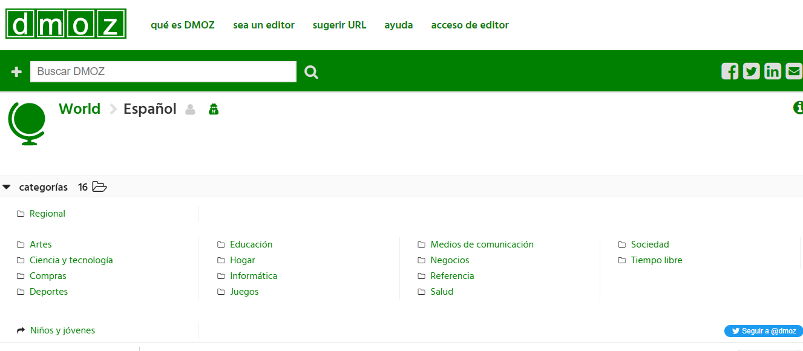
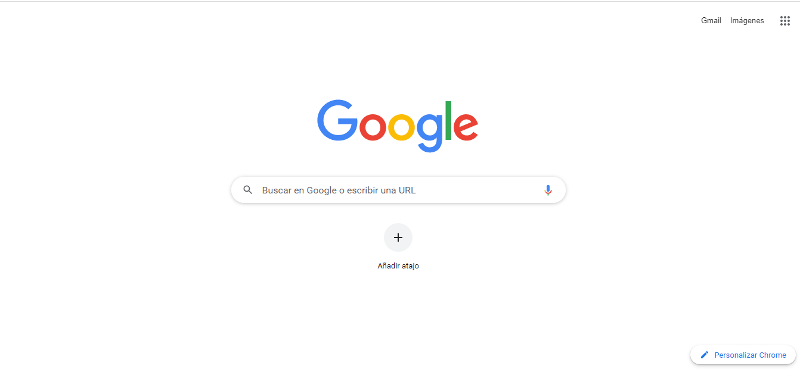
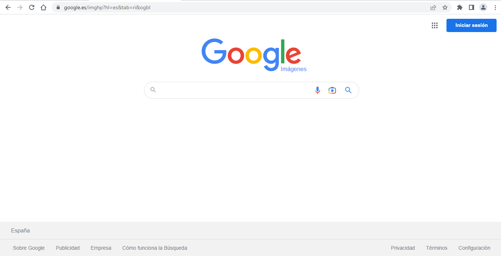
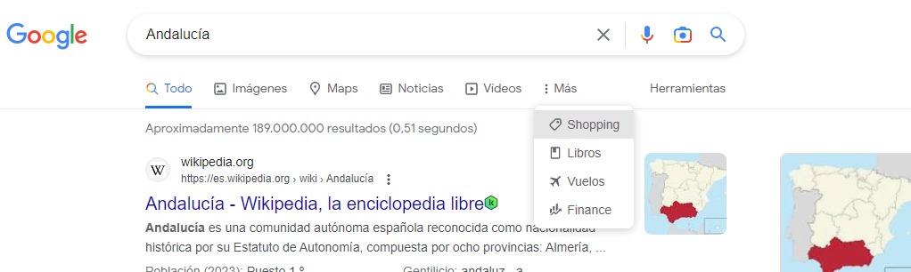
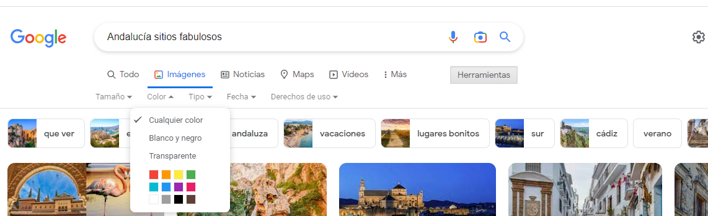
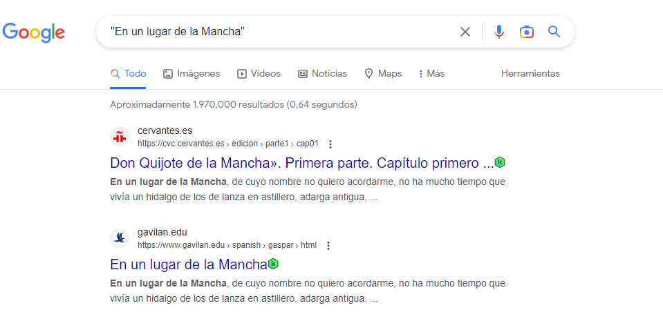
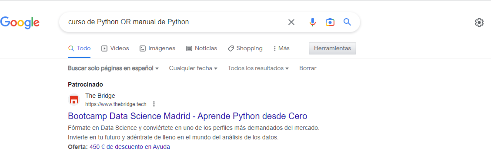
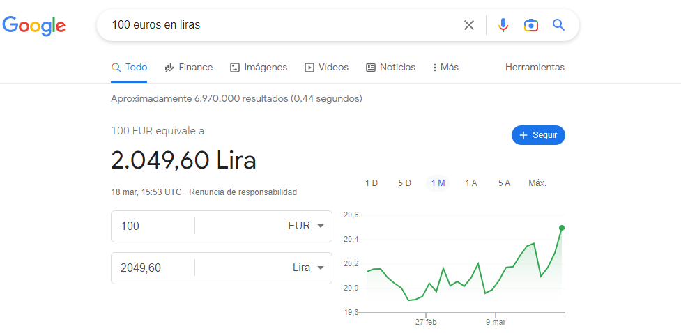
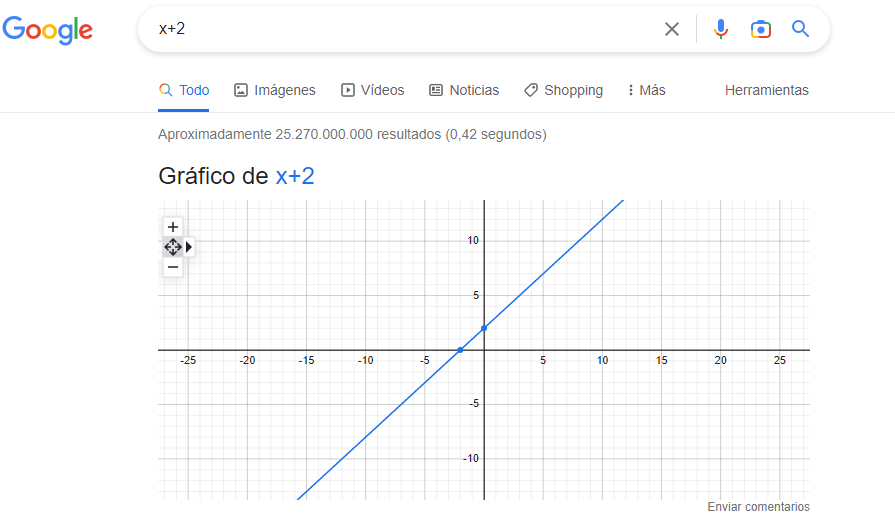

Principalmente, hay tres tipos de motores de búsqueda:
Jerárquicos: clasifican los resultados de la búsqueda según la relevancia que tiene el sitio en el buscador web. Cuentan con una interfaz de interrogación textual y revisan las páginas web a través de sus arañas. Con ellas recopilan toda la información de los contenidos que tienen en relación con la búsqueda que realiza el usuario. Son los más usados: Google, Bing, ...
Metabuscadores: Recopilan la información de varios motores de búsqueda para ofrecer un resultado general de la consulta realizada. Ejemplo: MetaCrawler, Booking (metabuscador de hoteles).
Directorios: también conocidos como índices, son listas de recursos organizados por temas o categorías generales. Requieren de intervención humana para su correcto funcionamiento. Un ejemplo de este tipo de buscador es Dmoz o páginas amarillas.

Hay infinidad de buscadores web, pero el más usado es Google.
Otros buscadores son:
- Bing
- DuckDuckGo
- Yahoo
- Ecosia
Búsqueda con Google
Aunque, a priori, realizar una búsqueda en Internet suele ser relativamente sencillo, sin embargo, hay veces que necesitamos buscar cierta información específica, más rebuscada, de tal manera que, obtener los resultados deseados no resulta tan fácil. En esos casos, la utilización de filtros o comandos especiales puede ayudarnos a hacer más precisa la búsqueda y obtener mejores resultados, reduciendo así el tiempo empleado en la misma.
En Google podemos hacer búsquedas escribiendo texto, relacionado con lo que queremos encontrar, en el cuadro "Buscar en Google o escribir una URL" y luego pulsando Enter. También podemos hacer búsquedas por voz pulsando en el icono del micrófono que aparece a la derecha.

Igualmente, es posible hacer una búsqueda por imagen, con la posibilidad de subir una imagen para buscar similares. Para ir a este modo de búsqueda, basta con hacer clic en el enlace Imágenes que se encuentra en la parte superior derecha de la ventana. Ahora, debajo de las letras de Google, aparece la palabra Imágenes para indicarnos que estamos en este modo.

Cuando realizamos una búsqueda se nos muestran todos los resultados, pero podemos usar las herramientas que nos proporciona Google para ver solo noticias, mapas, productos comerciales, imágenes, vuelos, libros o productos financieros y así acotar la búsqueda.

Cada una de estas secciones tiene sus propias herramientas (botón Herramientas). Así, para la sección Imágenes contamos con los filtros: tamaño, color, tipo, fecha y derechos de uso.

Otra posibilidad que nos ofrece Google para realizar búsquedas más precisas es tecleando una combinación de caracteres especiales y texto en el cuadro de búsqueda.
- Búsqueda exacta: escribiendo la expresión entre comillas, Google nos mostrará las páginas web que contienen exactamente dicha expresión.

- Combinar búsquedas: tecleamos dos expresiones separadas por las letras OR. Esto hace que se muestren las web que contienen una de las dos expresiones o ambas.

Si en vez de OR usamos AND, obtendremos como resultado aquellas páginas web que contienen todas las expresiones que hayamos indicado. Ejemplo: jardín AND laurel
- Excluir palabras de la búsqueda: escribiendo "-" delante de la palabra que queramos excluir de la búsqueda. Por ejemplo: velocidad jaguar -coche.
- Buscar una palabras con cualquier texto entre ellas: con el símbolo comodín *. Este sustituye a cualquier cadena de texto. Por ejemplo: "películas de * clásicas"
- Buscar por mapas: Ejemplo: map:Sebastopol.
- Buscar por red social: escribiendo "@" delante de la red social en la que quieras hacer búsquedas. Por ejemplo: @twitter.
- Buscar en un sitio concreto: escribimos "site:" delante de un sitio web. Por ejemplo: site:youtube.com, cómo funciona gmail site:google.es. No pongas espacio después de los dos puntos.
- Buscar por tipo de fichero: por ejemplo, para buscar documentos pdf sobre jardines escribiríamos:
jardines filetype:pdf
Y para buscar lo mismo pero en la web verdecora.es:
jardines filetype:pdf site:verdecora.es
- Calculadora y conversión de unidades: Google te ofrece resultados rápidos cuando introduces operaciones matemáticas o conversiones en el cuadro de búsqueda. Ejemplo: 100 euros en liras.


- Ver la versión en caché de Google de un sitio web: sirve para ver una versión más antigua de una web, útil si una web falla o acaba de hacer cambios. El buscador almacena capturas de todas las webs para poder entrar en ellas si quedan inaccesibles. Escribimos "cache:" delante de la dirección del sitio web.
- Páginas que tienen un enlace a una página determinada: Ejemplo: link:aeat.es, nos mostraría todas aquellas páginas que tienen un link hacia la página de la Agencia Tributaria.
- Buscar solo películas: Ejemplo: movie:volver
- Buscar en los títulos de las páginas: anteponiendo el comando intitle: para una palabra y allintitle: para una frase. Ejemplos:
intitle:matemáticas
allintitle:matemáticas para todos
- Buscar palabras clave en URLs: es útil, por ejemplo, cuando sabemos una parte de una dirección web y no nos acordamos del resto. Ejemplos:
inurl: python
allinurl:recursos python
-
Hacer una búsqueda avanzada: hacer clic en , en la parte derecha de la pantalla. Luego, en el panel buscar Búsqueda avanzada. Tienes estas opciones:
Todas estas palabras: los resultados incluyen todas las palabras que introduzcas.
Esta palabra o frase exactas: los resultados contienen la palabra o frase exactas que indiques.
Cualquiera de estas palabras: los resultados incluyen al menos una de las palabras que pongas.
Ninguna de estas palabras: los resultados no contienen ninguna de las palabras que introduzcas.
Números desde el: los resultados incluyen un número comprendido entre los dos números que indiques.
Consejos:
- Identifica los conceptos más importantes, las palabras clave. Intenta usar las que tengan más probabilidades de aparecer en el sitio que estás buscando. No uses palabras como el, la, y, sí, no, es. Estas palabras se usan con mucha frecuencia dentro de los textos y lo único que causarían es que tu búsqueda se amplíe más, sin encontrar algo específico.
- Piensa en sinónimos y términos alternativos.
- Preocúpate solo de lo importante: Google utiliza automáticamente la ortografía más común de una palabra determinada, tanto si la escribes correctamente como si no. Si buscas "RAE" obtendrás el mismo resultado que si escribes "rae".
- Aprovecha las sugerencias. Desde que comienzas a escribir, el buscador intenta saber lo que quieres buscar y te muestra sugerencias que pueden llegar a ser muy útiles.
- Busca más de una fuente para documentarte.